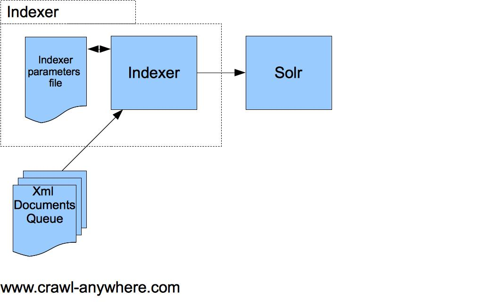

Moteur de recherche fulltext utilisant l'algorithme Lucene
= Basse de données non relationnelle spécialisé dans la recherche textuelle
Développé par la Fondation Apache
Actuellement en version 4.6.1
Interface d'administration claire et moderne :
[capture de la nouvelle vs capture de l'ancienne]
API REST en JSON/XML
De nombreuses librairies, dans de nombreux languages :
Java, C, Ruby, Python...
...et en PHP :
Une extention PECL...
...et même des bumdles Symphony 2
DESCRIBE TABLE "MaTable";
<?xml version="1.0" encoding="UTF-8" ?>
<schema name="dealer" version="1.5">
<types>
<fieldtype name="string" class="solr.StrField" sortMissingLast="true" omitNorms="true" />
<fieldType name="int" class="solr.IntField" />
<fieldType name="latLon" class="solr.LatLonType" subFieldSuffix="_latLon"/>
</types>
<fields>
<field name="id" type="int" indexed="true" stored="true" required="true" />
<field name="name" type="string" indexed="true" stored="false" required="true" />
<field name="company_id" type="int" indexed="true" stored="true" multiValued="true" required="true" />
<field name="coordinates" type="latLon" indexed="true" stored="false" required="true" />
</fields>
<uniqueKey>id</uniqueKey>
<solrQueryParser defaultOperator="OR" />
</schema>
<?xml version="1.0" encoding="UTF-8" ?>
<!-- [...] -->
<fieldType name="text_en" class="solr.TextField">
<analyzer type="index">
<tokenizer class="solr.WhitespaceTokenizerFactory" />
<filter class="solr.SynonymFilterFactory" synonyms="synonyms_en.txt" ignoreCase="true"
expand="true" />
<filter class="solr.StopFilterFactory" ignoreCase="true" words="stopwords_en.txt"
enablePositionIncrements="true" />
<filter class="solr.WordDelimiterFilterFactory" generateWordParts="1"
generateNumberParts="1" catenateWords="1" catenateNumbers="1" catenateAll="0"
splitOnCaseChange="1" />
<filter class="solr.LowerCaseFilterFactory" />
<filter class="solr.ASCIIFoldingFilterFactory"/>
<filter class="solr.SnowballPorterFilterFactory" language="English" />
</analyzer>
<analyzer type="query">
<tokenizer class="solr.WhitespaceTokenizerFactory" />
<filter class="solr.StopFilterFactory" ignoreCase="true" words="stopwords_en.txt"
enablePositionIncrements="true" />
<filter class="solr.WordDelimiterFilterFactory" generateWordParts="1"
generateNumberParts="1" catenateWords="0" catenateNumbers="0" catenateAll="0"
splitOnCaseChange="1" />
<filter class="solr.LowerCaseFilterFactory" />
<filter class="solr.ASCIIFoldingFilterFactory"/>
<filter class="solr.SnowballPorterFilterFactory" language="English" />
</analyzer>
</fieldType>
<!-- [...] -->
Pas de jointure complexe (un système de jointure simple existe depuis Solr 4.0)
Transactionnel aux coeurs du logiciel : impossible de modifier une donnée en direct (obligation de commit toutes les modifications)
Un moteur de recherche vient en supplément de BDD existantes (relationnelle, NoSQL, fichier...)
Il ne peut pas et ne doit pas remplacer une BDD "long terme"
L'indaxation consiste à stocker des données au sein de Solr
C'est durant cette phase que Solr construit ses index internes qui lui pemettent d'être très performant
Pour indexer des données il suffit de faire une requête HTTP le requestHandler update du code
Trois procédés majeurs d'indexation existent :
Trois procédés majeurs d'indexation existent :
C'est pas tout mais moi j'ai soif.